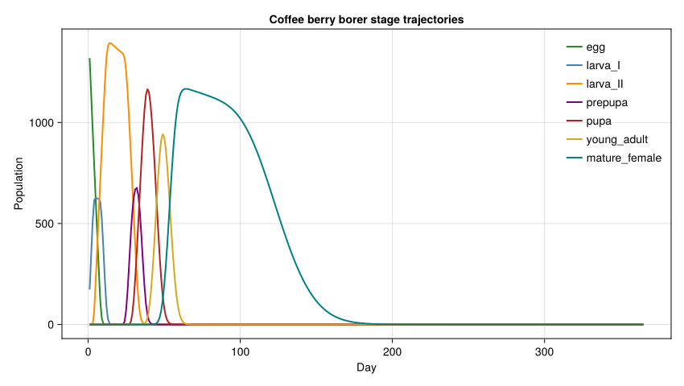
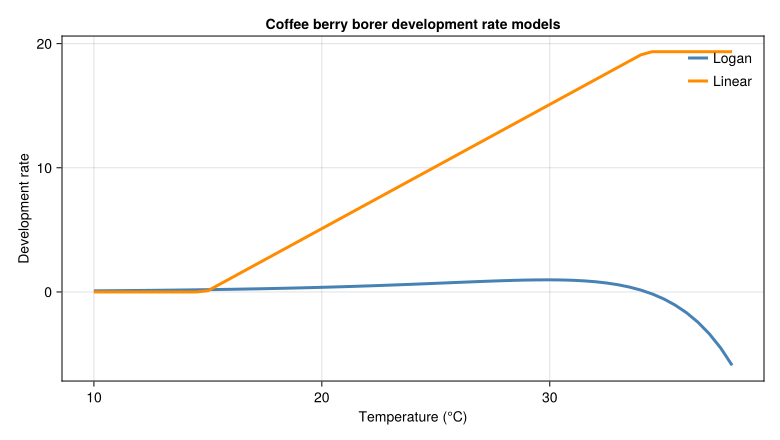

Coffee Berry Borer Lifecycle
Simon Frost
- Background
- Model Parameters
- Life Stage Parameters
- Weather: Colombian Coffee Zone
- Basic Simulation
- Lifecycle Analysis
- Degree-Day Accumulation in Tropical Climate
- Berry Preference Model
- Density-Dependent Simulation
- Migration Rate Comparison
- Key Insights
Primary reference: (Cure et al. 2020).
Background
The coffee berry borer (Hypothenemus hampei) is the most devastating pest of coffee worldwide. This vignette models its lifecycle using a physiologically based demographic model with:
- Nonlinear development rates (Lactin model)
- Age-structured population dynamics across 7 life stages
- Berry age preference for oviposition
- Intraspecific competition (density-dependent larval mortality)
- Rainfall-induced mortality
Reference: Cure et al. (2020). The coffee agroecosystem: Bio-economic analysis of coffee berry borer control. Journal of Applied Ecology. Also: Gutierrez et al. (1998). Tritrophic analysis of the coffee–coffee berry borer system.
Model Parameters
using PhysiologicallyBasedDemographicModels
using CairoMakie
# CBB temperature thresholds
const CBB_T_LOWER = 14.9 # °C — minimum development threshold
const CBB_T_UPPER = 34.25 # °C — maximum development threshold34.25Lactin Development Rate
The Lactin et al. (1995) nonlinear development rate model provides a more realistic temperature response than linear degree-days. We can approximate it using the Logan model available in the package:
# Logan Type III development rate approximating Lactin parameters
# Parameters fitted to CBB: ψ=0.02, ρ=0.15, T_upper=34.25, ΔT=3.0
cbb_dev = LoganDevelopmentRate(0.02, 0.15, CBB_T_UPPER, 3.0)
# Compare with linear model
cbb_linear = LinearDevelopmentRate(CBB_T_LOWER, CBB_T_UPPER)
# Development rates at different temperatures
for T in [15.0, 20.0, 25.0, 30.0, 34.0]
r_logan = development_rate(cbb_dev, T)
r_linear = development_rate(cbb_linear, T)
println("T=$(T)°C: Logan=$(round(r_logan, digits=4)), Linear=$(round(r_linear, digits=1))")
endT=15.0°C: Logan=0.1842, Linear=0.1
T=20.0°C: Logan=0.3722, Linear=5.1
T=25.0°C: Logan=0.6944, Linear=10.1
T=30.0°C: Logan=0.9744, Linear=15.1
T=34.0°C: Logan=0.147, Linear=19.1Life Stage Parameters
The CBB lifecycle has 7 stages with developmental times measured in degree-days above 14.9°C:
# Life stages: (name, k substages, mean developmental time in DD)
# Durations from Cure et al. Table 2:
# Eggs: 0–44.15 DD → duration 44.15 DD
# Larva I: 44.15–64.92 → duration 20.77 DD
# Larva II: 64.92–174.98 → duration 110.06 DD
# Pre-pupae: 174.98–200.81 → duration 25.83 DD
# Pupae: 200.81–262.47 → duration 61.66 DD
# Young adult: 262.47–312.47 → duration 50.0 DD
# Mature female: 312.47–827.0 → duration 514.53 DD
# Intrinsic mortality rates (per degree-day) from Table 3
cbb_stages = [
LifeStage(:egg, DistributedDelay(15, 44.15; W0=100.0), cbb_linear, 0.00102),
LifeStage(:larva_I, DistributedDelay(10, 20.77; W0=0.0), cbb_linear, 0.00094),
LifeStage(:larva_II, DistributedDelay(20, 110.06; W0=0.0), cbb_linear, 0.00094),
LifeStage(:prepupa, DistributedDelay(10, 25.83; W0=0.0), cbb_linear, 0.00073),
LifeStage(:pupa, DistributedDelay(15, 61.66; W0=0.0), cbb_linear, 0.00074),
LifeStage(:young_adult, DistributedDelay(10, 50.0; W0=0.0), cbb_linear, 0.00035),
LifeStage(:mature_female, DistributedDelay(10, 514.53; W0=0.0), cbb_linear, 0.00035),
]
cbb = Population(:coffee_berry_borer, cbb_stages)
println("Total life stages: ", n_stages(cbb))
println("Total substages: ", n_substages(cbb))
println("Initial population: ", total_population(cbb))Total life stages: 7
Total substages: 90
Initial population: 1500.0Weather: Colombian Coffee Zone
# Ciudad Bolivar, Antioquia, Colombia: 05°51'N, 1342 m
# Mean temperature ≈ 22°C, relatively stable year-round
# Mean annual rainfall: 2766 mm
n_days = 365
colombia_temps = [22.0 + 2.0 * sin(2π * (d - 100) / 365) for d in 1:n_days]
weather = WeatherSeries(colombia_temps; day_offset=1)WeatherSeries{Float64}(DailyWeather{Float64}[DailyWeather{Float64}(20.01777187201309, 20.01777187201309, 20.01777187201309, 0.0, 12.0, 0.0, 0.5), DailyWeather{Float64}(20.01348630146517, 20.01348630146517, 20.01348630146517, 0.0, 12.0, 0.0, 0.5), DailyWeather{Float64}(20.009789377798604, 20.009789377798604, 20.009789377798604, 0.0, 12.0, 0.0, 0.5), DailyWeather{Float64}(20.00668219649166, 20.00668219649166, 20.00668219649166, 0.0, 12.0, 0.0, 0.5), DailyWeather{Float64}(20.004165678269217, 20.004165678269217, 20.004165678269217, 0.0, 12.0, 0.0, 0.5), DailyWeather{Float64}(20.002240568829933, 20.002240568829933, 20.002240568829933, 0.0, 12.0, 0.0, 0.5), DailyWeather{Float64}(20.000907438625287, 20.000907438625287, 20.000907438625287, 0.0, 12.0, 0.0, 0.5), DailyWeather{Float64}(20.000166682690523, 20.000166682690523, 20.000166682690523, 0.0, 12.0, 0.0, 0.5), DailyWeather{Float64}(20.000018520527618, 20.000018520527618, 20.000018520527618, 0.0, 12.0, 0.0, 0.5), DailyWeather{Float64}(20.00046299604022, 20.00046299604022, 20.00046299604022, 0.0, 12.0, 0.0, 0.5) … DailyWeather{Float64}(20.092638006739108, 20.092638006739108, 20.092638006739108, 0.0, 12.0, 0.0, 0.5), DailyWeather{Float64}(20.08256436602541, 20.08256436602541, 20.08256436602541, 0.0, 12.0, 0.0, 0.5), DailyWeather{Float64}(20.073058902871704, 20.073058902871704, 20.073058902871704, 0.0, 12.0, 0.0, 0.5), DailyWeather{Float64}(20.06412443395187, 20.06412443395187, 20.06412443395187, 0.0, 12.0, 0.0, 0.5), DailyWeather{Float64}(20.055763606741877, 20.055763606741877, 20.055763606741877, 0.0, 12.0, 0.0, 0.5), DailyWeather{Float64}(20.047978898735263, 20.047978898735263, 20.047978898735263, 0.0, 12.0, 0.0, 0.5), DailyWeather{Float64}(20.04077261670902, 20.04077261670902, 20.04077261670902, 0.0, 12.0, 0.0, 0.5), DailyWeather{Float64}(20.034146896040035, 20.034146896040035, 20.034146896040035, 0.0, 12.0, 0.0, 0.5), DailyWeather{Float64}(20.02810370007234, 20.02810370007234, 20.02810370007234, 0.0, 12.0, 0.0, 0.5), DailyWeather{Float64}(20.02264481953532, 20.02264481953532, 20.02264481953532, 0.0, 12.0, 0.0, 0.5)], 1)Basic Simulation
prob = PBDMProblem(cbb, weather, (1, n_days))
sol = solve(prob, DirectIteration())
println(sol)
println("Net growth rate: ", round(net_growth_rate(sol), digits=4))PBDMSolution(365 days, 7 stages, retcode=Success)
Net growth rate: 0.9296Lifecycle Analysis
stage_names = [:egg, :larva_I, :larva_II, :prepupa, :pupa, :young_adult, :mature_female]
for (i, name) in enumerate(stage_names)
traj = stage_trajectory(sol, i)
peak_val = maximum(traj)
peak_day = sol.t[argmax(traj)]
final_val = traj[end]
println("$name: peak=$(round(peak_val, digits=1)) (day $peak_day), " *
"final=$(round(final_val, digits=1))")
endegg: peak=1318.8 (day 1), final=0.0
larva_I: peak=626.4 (day 5), final=0.0
larva_II: peak=1393.3 (day 14), final=0.0
prepupa: peak=675.2 (day 32), final=0.0
pupa: peak=1166.1 (day 39), final=0.0
young_adult: peak=943.0 (day 49), final=0.0
mature_female: peak=1166.5 (day 64), final=0.0Coffee berry borer stage trajectories
fig = Figure(size=(850, 480))
ax = Axis(fig[1, 1],
xlabel="Day",
ylabel="Population",
title="Coffee berry borer stage trajectories")
stage_colors = [:forestgreen, :steelblue, :darkorange, :purple, :firebrick, :goldenrod, :teal]
for (i, (name, color)) in enumerate(zip(stage_names, stage_colors))
lines!(ax, sol.t, stage_trajectory(sol, i); color=color, linewidth=2, label=string(name))
end
axislegend(ax, position=:rt, framevisible=false)
fig
Degree-Day Accumulation in Tropical Climate
In the Colombian coffee zone, temperatures are warm year-round, so degree-day accumulation is roughly linear:
cdd = cumulative_degree_days(sol)
dd_per_day = cdd[end] / length(cdd)
println("Mean DD/day: ", round(dd_per_day, digits=1)) # ≈ 7.1 DD/day
println("Total annual DD: ", round(cdd[end], digits=0))
# Generations per year estimate
generation_dd = 312.47 # DD from egg to mature female emergence
gens = cdd[end] / generation_dd
println("Estimated generations/year: ", round(gens, digits=1))Mean DD/day: 7.1
Total annual DD: 2592.0
Estimated generations/year: 8.3Logan and linear development rate comparison
temperature_grid = 10.0:0.5:38.0
logan_rates = [development_rate(cbb_dev, T) for T in temperature_grid]
linear_rates = [development_rate(cbb_linear, T) for T in temperature_grid]
fig = Figure(size=(780, 440))
ax = Axis(fig[1, 1],
xlabel="Temperature (°C)",
ylabel="Development rate",
title="Coffee berry borer development rate models")
lines!(ax, temperature_grid, logan_rates; color=:steelblue, linewidth=3, label="Logan")
lines!(ax, temperature_grid, linear_rates; color=:darkorange, linewidth=3, label="Linear")
axislegend(ax, position=:rt, framevisible=false)
fig
Berry Preference Model
CBB females preferentially attack ripe berries. The preference weights determine the effective attack rate on berries of different ages:
# Berry preference by phenological stage (from Table 4, cv. Colombia)
berry_preferences = Dict(
:pin_stage => 0.00, # No attack
:green_stage => 0.054, # Low preference
:yellow_stage => 0.57, # High preference
:ripe_stage => 0.61, # Highest preference
)
println("Berry preferences:")
for (stage, pref) in sort(collect(berry_preferences), by=x->x[2])
bar = repeat("█", round(Int, pref * 40))
println(" $stage: $(round(pref, digits=3)) $bar")
endBerry preferences:
pin_stage: 0.0
green_stage: 0.054 ██
yellow_stage: 0.57 ███████████████████████
ripe_stage: 0.61 ████████████████████████Density-Dependent Simulation
With density dependence, intraspecific competition kicks in when larval density exceeds a threshold within berries:
# Competition threshold: 4 larvae per berry
const U_THRESHOLD = 4.0
# Reproduction function: mature females produce eggs
# Fecundity: 0.3481 eggs per female per adult-day
# Sex ratio: 1:10 (male:female) → 90.9% female
const FECUNDITY = 0.3481
const FEMALE_FRAC = 10.0 / 11.0
function cbb_reproduction(pop, w, p, day)
mature = delay_total(pop.stages[end].delay)
dd = degree_days(pop.stages[1].dev_rate, w.T_mean)
# Daily egg production scaled by degree-days
return FECUNDITY * FEMALE_FRAC * mature * dd / 10.0
end
# Reset population for DD run
cbb_dd_stages = [
LifeStage(:egg, DistributedDelay(15, 44.15; W0=50.0), cbb_linear, 0.00102),
LifeStage(:larva_I, DistributedDelay(10, 20.77; W0=0.0), cbb_linear, 0.00094),
LifeStage(:larva_II, DistributedDelay(20, 110.06; W0=0.0), cbb_linear, 0.00094),
LifeStage(:prepupa, DistributedDelay(10, 25.83; W0=0.0), cbb_linear, 0.00073),
LifeStage(:pupa, DistributedDelay(15, 61.66; W0=0.0), cbb_linear, 0.00074),
LifeStage(:young_adult, DistributedDelay(10, 50.0; W0=0.0), cbb_linear, 0.00035),
LifeStage(:mature_female, DistributedDelay(10, 514.53; W0=0.0), cbb_linear, 0.00035),
]
cbb_dd = Population(:cbb, cbb_dd_stages)
prob_dd = PBDMProblem(DensityDependent(), cbb_dd, weather, (1, 365))
sol_dd = solve(prob_dd, DirectIteration(); reproduction_fn=cbb_reproduction)
println("With reproduction:")
println(" Final population: ", round(sum(sol_dd.u[end]), digits=0))
println(" Net growth rate: ", round(net_growth_rate(sol_dd), digits=4))With reproduction:
Final population: 9.5876532e7
Net growth rate: 1.0327Migration Rate Comparison
CBB migration rates vary with tree age, affecting reinfestation dynamics:
# Migration rates (per day) from Table 5
migration_rates = Dict(
"2-year trees" => 0.07,
"3-year trees" => 0.50,
"4-year trees" => 0.15,
)
println("\nCBB migration rates by tree age:")
for (age, rate) in sort(collect(migration_rates), by=x->x[2])
println(" $age: ψ = $rate /day")
end
println("\nImplication: 3-year trees have highest reinfestation risk")CBB migration rates by tree age:
2-year trees: ψ = 0.07 /day
4-year trees: ψ = 0.15 /day
3-year trees: ψ = 0.5 /day
Implication: 3-year trees have highest reinfestation riskKey Insights
Continuous generations: In tropical climates, CBB can complete ~8 generations per year with no diapause — populations grow continuously unless controlled.
Berry phenology matters: Attack is concentrated on yellow/ripe berries (preference \> 0.5), so harvest timing is a key control lever.
Sex ratio: The extreme female bias (10:1) means nearly all surviving adults are reproductive females.
Density regulation: At high densities (\>4 larvae/berry), intraspecific competition limits population growth, creating a natural carrying capacity within each berry.
Climate sensitivity: The narrow development window (14.9–34.25°C) means CBB is well-adapted to coffee-growing elevations but vulnerable to both cold and heat extremes.
<div id="refs" class="references csl-bib-body hanging-indent">
<div id="ref-Cure2020Coffee" class="csl-entry">
Cure, José Ricardo, Daniel Rodríguez, Andrew Paul Gutierrez, and Luigi Ponti. 2020. “The Coffee Agroecosystem: Bio-Economic Analysis of Coffee Berry Borer Control (<span class="nocase">Hypothenemus hampei</span>).” Scientific Reports 10: 12285. https://doi.org/10.1038/s41598-020-68989-x.
</div>
</div>